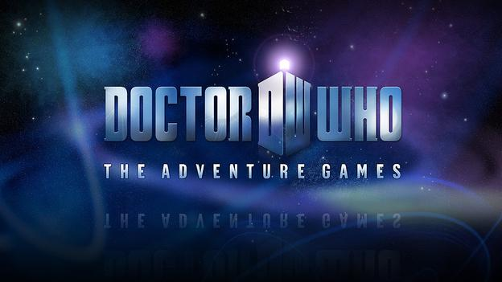
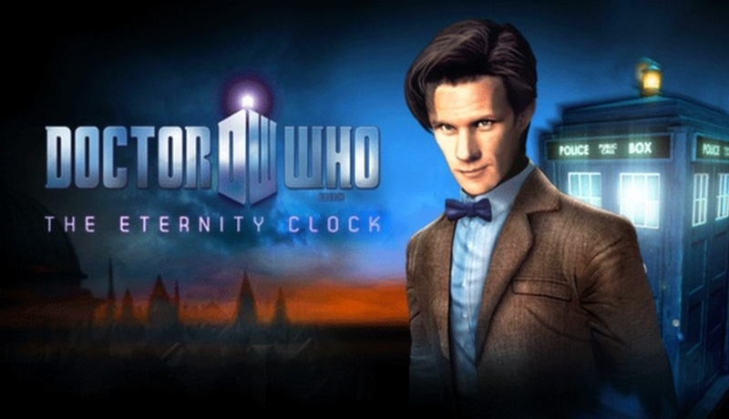
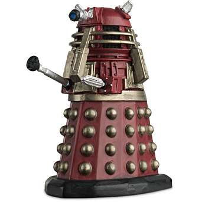
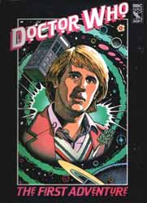
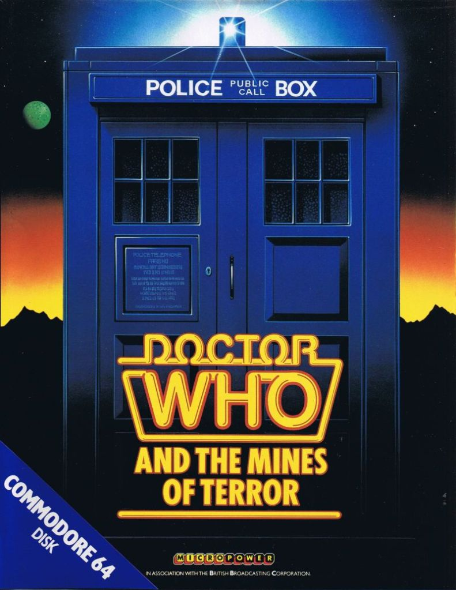
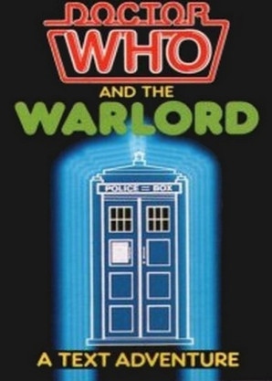
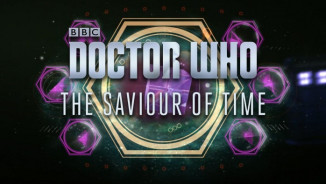
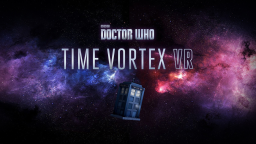

Games
DOCTOR WHO: THE ADVENTURES GAMES
Em 2010, a BBC lançou a 1ª Temporada dos Adventure Games, jogos de Doctor Who em terceira pessoa para computador, que foram disponibilizados gratuitamente para download somente no Reino Unido. Após o fim da 6ª temporada da série, o primeiro episódio da 2ª temporada do jogo foi lançado, The Gunpowder Plot. Contudo, em fevereiro de 2011 a emissora anunciou o fim da série de jogos. Agora eles estão disponíveis na Steam.
THE ETERNITY CLOCK
Na Steam, você também encontra “Doctor Who: The Eternity Clock” um jogo mais recente, lançado em 2012, onde você alterna entre o Doctor e a River tentando desvendar o mistério do Relógio da Eternidade e impedir seu mortal caminho de destruição antes que seja tarde. O jogador enfrentará monstros terríveis, já vistos na série como por exemplo Silurians, Cybermen, Daleks e o Silêncio.
GARTIC
Adivinhe com seus amigos que personagens e arcos eles estão desenhado!
Jogar Online (Acessar)
DALEK HACK
Uma bomba da realidade está na nave-mãe dos Dalek. Os Daleks querem usá-lo para destruir o universo. Como é muito perigoso dentro da nave-mãe, o médico precisa reconstruir, reconectar e cortar um Dalek. Para isso, o Doctor precisa construir uma concha de Dalek, usando as peças que encontra.
Jogar Online (Acessar)
DOCTOR WHO: THE FIRST ADVENTURE
o jogador se aventurava por quatro mini-jogos que passaram por níveis de conclusão que são versões temáticas de Pac-Man , Frogger , Space Invaders e Battleship.
Jogar Online (Acessar)
DOCTOR WHO AND THE MINES OF TERROR
O objetivo do jogo é para deter o Mestre da produção de Heatonite, recuperar os planos roubados para os senhores do tempo , e voltar com segurança.
Jogar Online (Acessar)
DOCTOR WHO IS THE WAR LORD
Usando sua inteligência, fluência e boa aparência, você precisará pensar, conversar e encantar o seu caminho a partir de inúmeras situações perturbadoras e coletar os objetos essenciais para completar o jogo.
Jogar Online (Acessar)
THE SAVIOR OF TIME
Jogar Online (Acessar)
GOOGLE WHO
Recupere a logo do google, ela foi capturada pelos daleks.
Jogar Online (Acessar)
Time Vortex VR.jpg
Pilote a TARDIS no vórtice do tempo.
Jogar Online (Acessar)
OS DOUTORES SE PERDERAM NO TEMPO
Adivinhe onde os doutores estão. (Jogo em português)
Jogar Online (Acessar)
Créditos dos links Jogos, das Imagens e dos Textos: Universo Who, Os Mestres de Luxor, Parceria Who e Senhor Secreto